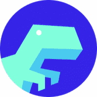
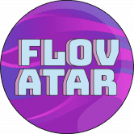
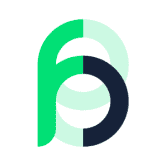
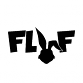
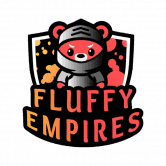
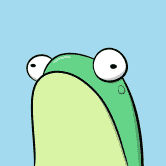
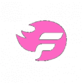
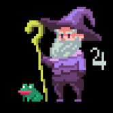

 Floorprice Prediction Game Floorprice Finance 是新的 NFT 衍生平台，将允许用户在无需购买基础 NFT 的情况下推测 NFT 的价格。 通过该平台，投资者可以利用他们的市场知识来预测特定 NFT 集合的底价在特定时
 Flovatar Flovatar 是下一代 PFP 项目，建立在 Flow 之上，收藏家在其中发挥创意，塑造自己独特的角色。参与者将能够在超过 1000 亿种不同组合的七个主要类别中选择他们最喜欢的组
Flowerpatch Flowerpatch 是一款数字农业游戏，以收藏品和备受追捧的 ERC-721 FLOWER 为中心。我们已经消除了在现实世界中种植大麻的劳动密集型责任，并使您能够在舒适的家中或地球上的任
 Flowns 飞龙在做什么？ https://www.onflow.org/post/flow-blockchain-flowns-domain-name-service-mynft Flowns 是一个社区驱动的项目，旨在为用户建立一个个性化的身份和资产开放协议。 Flowns团队创始人拥有丰富的互联网应用开发经验，深
 Fluf World FLUF World 拥有 10,000 只独特的 3D 动画兔子，它们以 NFT 的形式生活在区块链上。 只有一件事 FLUF 比胡萝卜更喜欢，那就是兴奋剂节拍！因此，没有舞蹈和配乐，任何 FLUF 都不完
 Fluffy Empires Fluffy Empires 是一款在 BSC（Binance）上进行的 3D 开放世界游戏。 Fluffies 是我们游戏以及相关生态系统中的主要参与者。每个 Fluffy 在外观和游戏统计数据方面都是完
Fluity Fluity Protocol 是币安智能链上 Liquity 协议的一个友好分支。 Fluity 致力于实现 Liquity 的愿景，即提供无息贷款、高资本效率和抗审查稳定币的去中心化借贷协议。 Fluity 具有与 Liquity 相同的功
 Fly Frogs Fly Frogs 是 10,000 个随机生成的 NFT 的集合。没有两只青蛙是完全一样的。青蛙由 180 多种手绘资产组成，具有 6 个特征： 背景 (25) 皮肤 (23) 头 (52) 眼睛 (14) 嘴巴 (17) 服装 (56)
 FMTLOL FMTLOL Dapp 用于创建用户活动以增加用户的知名度，通过添加社交帐户链接并允许用户在关注此帐户时获得 FM 令牌。 Follow Me 是基于 DeFi 的社交媒体奖励代币。该令牌允许用
Fnet Blockchain Explorer 鱼网| $FNet Fish Network 是一个集成的社区生态系统，可促进用户在一个生态系统中的使用： NFT P2E小游戏 薄荷应用 交换应用 区块链浏览器 P2E游戏 钱包应用 为什么选
Focused Sharpe Index 聚焦夏普指数 (FSI) 旨在保持稳定、持续的上升趋势，以努力永远超越 BTC 和 ETH。以 40% 到 60% 的百分比将 ETH 多头用于 BTC 将允许或持续 90 度上涨，风险最小。 $FSI 基金不
Foliowatch Foliowatch 是 Binance Smartchain 上第一个具有 LP 管理的智能 Defi Dashboard。 投资组合和流动资金池性能观察以及收益农业，完全去中心化。 LP 性能观察功能是 FolioWatch Dapp 的一种独特
Folks Finance 什么是大众金融？ Folks Finance 是服务于资本市场的领先协议，建立在 Algorand 区块链之上。该协议以去中心化和无需许可的方式提供借贷服务。通过借贷业务，Folks 用
 Forgotten Runes Forgotten Runes Wizard’s Cult 是 10k Wizard NFT 的集合。每个向导都是独一无二的，并且有自己的名字。此外，所有巫师艺术都是在链上完全编码的。 随着我们的邪教为社交媒体和我们独一
Fortpolis Bank HTML 第 1 步 - 质押 BUSD 并获得 FORT 代币的每日质押奖励（每存入 100 BUSD 每天 2 个代币）。您可以随时领取您的 $FORT 奖励。您无法取消质押您质押的 BUSD。 第 2 步 - 您的
Foundation 如何在 Foundation 上注册为创作者？ 我们现在只接受邀请。想要成为 Foundation 的创作者？当我们更广泛地开放时，我们会宣布。 邀请如何运作？ 基金会社区的发展现在掌握在创
Fountain Protocol Fountain Protocol 是第一个由 Oasis 提供支持的跨链借贷平台。该协议使用户能够体验到高资本效率的 DeFi 资产一站式管理。 Fountain Protocol 是第一个由 Oasis 提供支持的跨链借贷平台。该协议使
FragDex 简单流畅的dex体验，让您轻松购买&卖碎片！价格根据需求波动（类似于 Blaze / Bancor）。 FragDex 是一个去中心化的交易所。 paltfrom 在 TRON 区块链上构建
FragDice 通过玩这款经典的骰子游戏，为 div 挖掘 FragBonds。 需要 $FRAG 代币才能玩（tron 上的 trc20 代币）。FragDice dApp 是一种基于 Tron 协议的赌博类别的
Fragments By James Jean 多学科视觉艺术家 James Jean 展示了 Fragments (2022)，这是由数字艺术平台 Outland 委托的全新手绘数字艺术系列。 这个雄心勃勃的新系列的灵感来自艺术家即将建造的大型
Frax Finance Frax 试图成为第一个实现两者设计原则的稳定币协议，以创建高度可扩展、无需信任、极其稳定且意识形态纯正的链上货币。 Frax 协议是一个包含稳定币 Frax (FRAX) 和治理
Fried Bacon 炸培根，BNB 矿工，每天可赚取高达 10% 的收益，另外还有 10% 的推荐奖励。 我们的目标是打造稳定发展、社区持续成长的稳定 dapp。 ✅ 每日回报 : 10% ✅ 不推
Fried Chickens 什么是炸鸡？ 炸鸡是 Token Miner 元的一个有趣的旋转。 我们的应用程序充当 BNB 奖励池，只要奖励池中还有 BNB，每天都会返回池中 8% 的 BNB！用户可以在积累时选
Fried Donuts 币安智能链上的创新 DeFi 高达 15% 的每日回报和 13% 的推荐奖金 完全验证和审计的合约。 什么是“甜甜圈”？ 甜甜圈是受雇于 BNB 并努力获得奖励的矿工。 这只是我们决
Frontier Game 100% 自定义 一切都是在我们的自定义智能合约下铸造和生成的。系列一 黑盒系列一已售罄。 我们再也不会卖掉它们了。2,000 KEYS $DATA Utility Token [ERC-20] 将分
Frontyard Baseball Frontyard Baseball 是一款有趣且令人兴奋的基于 9v9 策略的棒球比赛，您可以在其中获得自己的球员并赚取 ETH 来击出本垒打。购买您的球员，建立您的梦想球队，并在终极加密
Fruit Party 什么是水果派对？ Fruit Party 是在 Avalanche 网络上推出的 Baked Beans 分叉。我们创建了这个项目，旨在为世界提供一种有趣且简单的方式来赚取被动收入。 它是如何工作的？将 Avax 放
Frutti Dino Frutti Dino 是一款 SRPG 游戏，您可以通过使用由 NFT 组成的具有不同特征的 Dinos 来抵御未完全出生的野生突变体，从而保护 Dinos 的栖息地。 您可以利用赋予每个 Dino 的独特统计数
FullBunny.network 如果您想在世界任何地方在 Binance Smart Chain 或 Polygon 上发起众筹活动，那么您来对地方了。 FullBunny.network 将保持一个抗审查、去中心化和去信任的平台。 在 Binance Smart Chain 或 Polygon 上发起活动。 从 4
fullinvest FULLINVEST.IO 以风险调整后的回报奖励中期投资，该项目是基于 Polygon 网络的社区驱动的高收益质押协议。 用户可以通过 Polygon 的原生代币 MATIC 产生被动收入，我们创建了一个易于使
FullSail Finance BSC 上的第三代通缩收益农场和算法稳定币协议和 AMM 具有链上推荐计划,我们想让探索、跟踪和管理 dapps 对所有人都有洞察力、方便和有益。 我们从 2018 年开始，为全
Fuloos Token Fuloos 是一种全球信任的支付机制，在汽车去中心化层上运行。 Fuloos 承诺提供一个安全、更快和改进的支付处理系统，个人可以在其中自行管理财务。 Fuloos 的开发团队正
FunBeast FUNBEAST 是基于 Astar 构建的以社区为中心的 AMM 和 DEX。 我们的主要愿景是为我们的用户提供一站式的 Defi 平台。 FUNBEAST 提供 Astar 链上最低的交易费用。 我们的目标是创建一个一


")